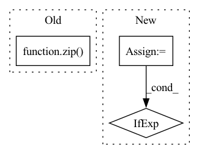

Pattern ID :12705
Before Change
display_samples = []
data = sorted(
zip( group_unique_labels, group_unique_data) ,
key=lambda x: x[0],
reverse=True
)After Change
// Calculate count per feature-group
group_unique_data["count"] = group_unique_data[index_col_name].apply(len)
// Sort by count
group_unique_data = group_unique_data.sort_values(by="count", ascending=False)
num_ambiguous = 0
ambiguous_label_name = "Observed Labels"
indices_name = "Instances"
samples = []
display_samples = []
for group_index, group_data in group_unique_data.iterrows():
ambiguous_labels = set(group_data[label_name])
if len(ambiguous_labels) == 1:
continue
num_ambiguous += group_data["count"]
samples.append(group_data[index_col_name])
if context.with_display is True:
index_names = group_unique_data.index.names
// In case of single feature the group_index is not a list so convert it
group_index = group_index if isinstance(group_index, list) else [group_index]
display_sample = dict(zip(index_names, group_index))
// Using tuple since it"s hashable
display_sample[ambiguous_label_name] = tuple(ambiguous_labels)In pattern: SUPERPATTERN
Frequency: 5
Non-data size: 3
Instances Fragment ID: 43017120
Project Name: deepchecks/deepchecks
Commit Name: b866659d362170aad70ee4730d6f4199ee783337
Time: 2022-07-24
Author: matan@deepchecks.com
File Name: deepchecks/tabular/checks/data_integrity/conflicting_labels.py
M Class Name: ConflictingLabels
N Class Name: ConflictingLabels
M Method Name: run_logic(3)
N Method Name: run_logic(3)
M Parent Class: SingleDatasetCheck
N Parent Class: SingleDatasetCheck
M File Name: deepchecks/tabular/checks/data_integrity/conflicting_labels.py
N File Name: deepchecks/tabular/checks/data_integrity/conflicting_labels.py
M Start Line: 71
M End Line: 115
N Start Line: 71
N End Line: 118
Before Change
else "continuous"
)
zipped = zip( curr_sample_ids, curr_points, label_values)
traces = {}
for (id, points, label) in zipped:
add_to_trace(traces, selected_ids, id, points, label, style)
After Change
filters = data["filters"]
extended_stages = data["extended"]
extended_selection = data["extendedSelection"]
selection_mode = data["selectionMode"]
stages = data["view"]
dataset = fo.load_dataset(datasetName)
print(data)
results = dataset.load_brain_results(key)
all_points = results.points
all_sample_ids = results._sample_ids
// This is the view loaded in the view bar
view = fosv.get_view(datasetName, stages=stages)
results.use_view(view, allow_missing=True)
curr_points = results._curr_points
curr_sample_ids = results._curr_sample_ids
curr_label_ids = results._curr_label_ids
label_values = results.view.values(labels_field)
// TODO optimize count
values_count = len(set(label_values))
selected_ids = get_selected_ids(datasetName, filters, extended_stages, extended_selection, stages, curr_sample_ids)
distinct_values = set(label_values)
style = (
"categorical"
if len(distinct_values) <= MAX_CATEGORIES
else "continuous"
)
point_ids = curr_label_ids if selection_mode == "patches" else curr_sample_ids
zipped = zip(point_ids, curr_points, label_values)
traces = {} Fragment ID: 43017110
Project Name: voxel51/fiftyone
Commit Name: 259c70baa5c4b967ebd6c49a0964b9ac3447f4b4
Time: 2023-01-18
Author: ritchie@voxel51.com
File Name: fiftyone/server/routes/embeddings.py
M Class Name: Embeddings
N Class Name: Embeddings
M Method Name: post(3)
N Method Name: post(3)
M Parent Class: HTTPEndpoint
N Parent Class: HTTPEndpoint
M File Name: fiftyone/server/routes/embeddings.py
N File Name: fiftyone/server/routes/embeddings.py
M Start Line: 28
M End Line: 99
N Start Line: 35
N End Line: 78
Before Change
class Dataset(BaseModel.Dataset):
def _prepare(self):
self.item2cate = dict(zip( self.corpus.item_meta_df["item_id"], self.corpus.item_meta_df["category"]) )
super()._prepare()
def _get_feed_dict(self, index):After Change
class Dataset(BaseModel.Dataset):
def _prepare(self):
category_col = self.model.category_col
items = self.corpus.item_meta_df["item_id"]
categories = self.corpus.item_meta_df[category_col] if category_col is not None else np.zeros_like(items)
self.item2cate = dict(zip(items, categories))
super()._prepare()
Fragment ID: 43017128
Project Name: thuwangcy/rechorus
Commit Name: 52b41f1728601b1a4cdf4e2b67313a2a2b20e182
Time: 2020-11-04
Author: THUwangcy@gmail.com
File Name: src/models/SLRC.py
M Class Name: Dataset
N Class Name: Dataset
M Method Name: _prepare(1)
N Method Name: _prepare(1)
M Parent Class: BaseModel.Dataset
N Parent Class: BaseModel.Dataset
M File Name: src/models/SLRC.py
N File Name: src/models/SLRC.py
M Start Line: 70
M End Line: 70
N Start Line: 76
N End Line: 79
Before Change
if torch.is_tensor(class_1):
return torch.cat((class_1, class_2), dim=1)
else:
return np.array(list(zip( class_1, class_2) )).reshape((-1, 2))
elif self._backend == "tensorflow":
return self._model.predict(input)After Change
self._model = self._model.to(device)
if isinstance(input, pd.DataFrame):
input = input.values
input, tensor_output = (
(torch.Tensor(input), False)
if not torch.is_tensor(input)
else (input, True)
)
input = input.to(device)
Fragment ID: 43017114
Project Name: indyfree/carla
Commit Name: 9b4d02120789794e885d4e47da522e1a1c17ed99
Time: 2021-05-27
Author: sbielawski@web.de
File Name: carla/models/catalog/catalog.py
M Class Name: MLModelCatalog
N Class Name: MLModelCatalog
M Method Name: predict_proba(2)
N Method Name: predict_proba(2)
M Parent Class: MLModel
N Parent Class: MLModel
M File Name: carla/models/catalog/catalog.py
N File Name: carla/models/catalog/catalog.py
M Start Line: 255
M End Line: 266
N Start Line: 235
N End Line: 258
Before Change
tgt,
score,
program,
) in zip( ids, src_sentences, trg_sentences, cosine_scores, programs) :
fout.write("\t".join([id_, src, tgt, "{:0.4f}".format(score), program]) + "\n")
After Change
id_, src, tgt, score = ids[i], src_sentences[i], tgt_sentences[i], cosine_scores[i]
prog = None
if programs:
prog = programs[i]
fout.write("\t".join([id_, src, tgt, "{:0.4f}".format(score), prog if prog else ""]) + "\n")
Fragment ID: 43017116
Project Name: stanford-oval/genienlp
Commit Name: 6dda219536dbd6aef9aabfabbc1e5a1e252a833d
Time: 2021-06-27
Author: mehrad@stanford.edu
File Name: genienlp/sts/sts_calculate_scores.py
M Class Name: AnonimousClass
N Class Name: AnonimousClass
M Method Name: main(1)
N Method Name: main(1)
M Parent Class:
N Parent Class:
M File Name: genienlp/sts/sts_calculate_scores.py
N File Name: genienlp/sts/sts_calculate_scores.py
M Start Line: 58
M End Line: 87
N Start Line: 58
N End Line: 86